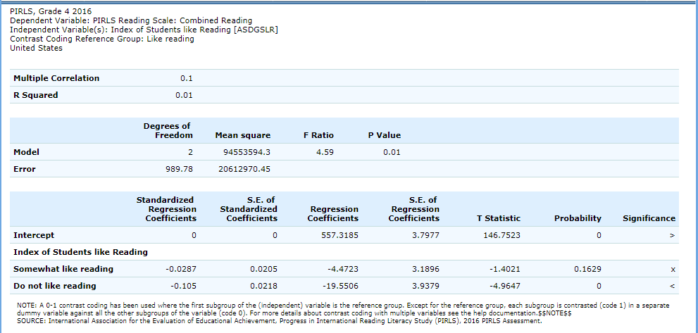

3 PIRLS IDE Walkthrough
There are four general steps for exploring each IDE page (see exhibit 3-1). Each step is described in more detail in the following sub-sections.
<<<<<<< Updated upstream
Exhibit 3. What you will see in the IDE environment and what each step entails
<<<<<<< HEAD
 =======
Exhibit 3-1. What you will see in the IDE environment and what each step entails
>>>>>>> Stashed changes
=======
>>>>>>> main
=======
Exhibit 3-1. What you will see in the IDE environment and what each step entails
>>>>>>> Stashed changes
=======
>>>>>>> main
3.1 Select Criteria
3.1.1 Overview
Your data query in the IDE (International Data Explorer) begins on the Select Criteria screen (see exhibit 3-2).
Choose one Subject, and one or more Dependent Variables, Years, and Jurisdictions for the data you wish to view or compare.
Use the Reset button located in the upper right portion of the screen (just below the Help button) to erase your choices and begin again.
Click on a blue sideways facing arrow (►) to open up a category and click on a blue downward facing arrow (▼) to close a category.
3.1.2 Choose Subject
Under Subject, you have the choice of PIRLS or ePIRLS. Once a subject is chosen, the screen resets and you can select Year(s), Dependent Variable(s), and Jurisdiction(s).
3.1.3 Choose Dependent Variableand Year
Under Dependent Variable, you can choose the combined reading scale and/or any of the reading subscales. Note that the combined reading scale is the default (as shown in exhibit 3-2). The 2001 and 2006 reading subscales have been rescaled to allow for comparisons to 2011 and later years.
In addition, there are a number of variables other than scale scores that you may choose as a dependent variable (see exhibit 3-3). These variables—such as age, teaching experience, and class size—are all continuous variables and are used as a dependent variable of analysis.
You may also choose the survey year (All years, 2016, 2011, 2006, or 2001) at the top of either step 1 or 2. Notice for which years a dependent variable, jurisdiction, or variable data are available by looking below each year for the grid of dots (which means data are available) or the “No data” slash.

3.1.4 Choose Jurisdiction
With your dependent variable selected, next choose at least one Jurisdiction.
Jurisdictions are found under the following groups: Country and Benchmarking jurisdictions, and Off-Grade Level Participants. There is also a group category called Average, with options to display the Average of Countries and the Average of Selected Countries/Participants. Please note that selecting Average of Countries or Average of Selected Countries/Participants may produce an error message in the Build Reports step due to the high volume of information contained in these groups.
The general procedures for selecting one or more jurisdictions are as follows:
To open or close jurisdictions, click on the arrow. Jurisdictions in the group are open and can be selected when the blue arrow points down (see exhibit 3-4).
Click the checkboxes next to specific jurisdictions that you are interested in, or uncheck those jurisdictions that you wish to deselect. If you click the checkbox next to the group name (e.g., “Country”), you will select all the jurisdictions within that group. If desired, uncheck the group name to deselect all.
If you want to close a group (for example, close the list of countries in order to readily see the benchmarking jurisdictions), click the blue arrow next to the group name. The closed group’s arrow points to the right. Be advised that closing the group will not deselect your choices.
To continue in the IDE, click the Select Grouping Variables button at the bottom of the page or the tab at the top of the page to go to the next screen (see exhibit 3-4 above).
3.2 Select Grouping Variables
3.2.1 Overview
Step 2, Select Grouping Variables, can only be accessed after choosing criteria at step 1, Select Criteria.
To continue your data query and edit a report, you must choose at least one variable on this screen. You can browse for variables either by using the Category and Sub Category lists or by using the Search function (see exhibit 3-5). You can return to this screen to change variable selections at any time.
3.2.2 Search Using Category and Subcategory Lists
Choose at least one variable on this screen for your report. One way to do this is to search for variables using the Category and Sub Category lists. If you don’t wish to choose from any of the specified categories and subcategories, then select All cases.
The variables shown are tied to the criteria you selected at step 1 (Dependent Variable, Year and Jurisdiction), which are indicated at the top of the screen. To change any of these criteria, return to step 1, Select Criteria.
To browse for variables, get details about them, select them, and view them:
- Click the blue arrows to open and close categories and subcategories
of variables
(see exhibit 3-6).
Click details or hide details to show or hide the full title of a given variable, the PIRLS ID, and the values (i.e., variable labels). Note that some variables have the same or similar short titles but comparing details will show you how they differ. See the example in exhibit 3-6, which shows general things in the student’s home (ASBGBOOK and ASBGTA1).
Click the checkbox next to a variable to select it for your analysis/report. You will see the count increase next to View Selected.
Click the View Selected tab to see the variables you have chosen. To return to the full list of variables by category, click the View All tab.
Remember to select the year for which you wish to build a report and make sure that data are available for your chosen year and variables.
Searching variables is an option from the Search box. See section 2.C, page 12, for more details about this function.
When you have selected the variable(s) you want to include, continue by clicking the Edit Reports button at the bottom of the page or the tab at the top of the page to go to the next screen.
3.2.3 Search Function
The second way to search for variables is to use the Search function on the Select Grouping Variables screen.
Type a term in the Search box and click Go (or hit “Enter” on your keyboard) to find variables by keywords in the question and/or details for the variable (see exhibit 3-7). If you use multiple keywords, “and” is assumed. You can also narrow your search by using “or,” “not,” or “and not.” The search function operates on an exact phrase if it is contained in quotes. The variable(s) that include the search term(s) in the question or its details will be listed.
See Section 2.B. Search Using Category and Subcategory Lists (page 11) for information on how to get details about variables, selecting variables, and viewing variables.

When you have selected the variable(s) you want to include, continue by clicking the Edit Reports button at the bottom of the page or the tab at the top of the page to go to the next screen.
3.3 Edit Reports
3.3.1 Overview
You can access step 3, Edit Reports, after choosing criteria at step 1, Select Criteria, and choosing at least one variable at step 2, Select Grouping Variables. The IDE will automatically build reports based on your selections from steps 1 and 2. However, at step 3, the Edit Reports phase, you may modify your selections for each report.
At this step, you can:
Preview and edit the layout of your reports;
Copy reports or create new reports based on the variables selected;
Change formatting options, such as the number of decimal places to display, for all reports (these may also be changed in individual reports, but formatting options can overwrite previous edits);
Change statistics options, such as averages and achievement levels, for all reports (these may also be changed in individual reports, but statistics options can overwrite previous edits);
Select reports to be built into tables and charts at step 4, Build Reports; and
Delete reports.
Using your chosen criteria, the IDE will return a separate data report for each variable you have chosen. If you have selected two or three variables (not counting All cases), you will also see a cross-tabulated report that crosses these variables. If your selected criteria include more than one dependent variable (e.g., combined reading scale and age), a separate set of data reports will be generated for each dependent variable (see exhibit 3-8, page 14).

The Edit Reports step shows detailed information on the layout of your reports (see exhibit 3-8). The Report column indicates the report, or cross-tabulation report, number based on the variable(s) chosen during the criteria selection. The Action column gives you the option to Preview, Edit, Delete, or Copy the report. Here, reports may be chosen for the report-building phase under the All tab, either by selecting All or selecting individual reports. The Grouping Variable column indicates the variable(s) included in the report. The Year column shows which years you have selected for comparison. The Jurisdiction column labels the countries and subnational education systems for comparison, and the Statistic column provides the type of statistic output that will be generated in the report-building phase.
3.3.2 Preview Report
Select Preview under the Action column to see how your report will be laid out (see exhibit 3-8). The preview will not provide actual data, but will show how the data will be arranged in rows and columns (see exhibit 3-9, page 15). You can select Preview at any time to see how your changes will affect the report’s final layout.

3.3.3 Edit Report
To edit the report, select the command under the Action column next to the report (see exhibit 3-8 above). Another way to edit a report is to select the Edit tab when you are previewing a report. The following can be done using this function (see exhibit 3-10).

- Name your report. You have the option of giving each report a distinctive name, up to a limit of 50 characters, using only letters, numbers, spaces, underscores, and hyphens. (Otherwise, the default name is Report 1, Report 2, etc., and Cross-Tabulated Report 1, Cross-Tabulated Report 2, etc.).
Select a dependent variable. You can choose a dependent variable if more than one was selected at step 1.
Select which jurisdictions, variables, years (if applicable), and statistics to include (out of the selections previously made at steps 1 and 2). You can select up to two statistics options from the following: averages, percentages, achievement levels—discrete, achievement levels—cumulative, percentiles, and standard deviations. (For further information, see Section 3.G. Statistics Options, page 19.)
To create a new variable while editing a report, click on Create New… under the Grouping Variable heading. Section 3.D below further explains the process for creating a new variable.
Change the table layout by dragging elements to determine which items will appear in rows and which will appear in columns. Some of the arrangements will not be permissible, but a pop-up alert will explain this.
To save changes, make sure to select Done in the upper or lower right portion of the screen before closing the Edit Report window.
3.3.4 Create New Variables
To create a new variable, select Edit under the Action column and select Create new… under Grouping Variable (see exhibit 3-10). The new variable is created by combining values for an existing variable. The steps are as follows:
Click Create New under the Grouping Variable heading.
Select the variable for which you wish to combine values.
Select the values you want to combine by checking the boxes to the left of the values (see exhibit 3-11).
Create a name for the new value, and press Create. The collapsed values will appear in gray to indicate that they have already been used.
Wait for the screen to refresh, and press Done.
The new variable will appear in the Grouping Variable list (in the Edit Report window, if you access it that way, or else in the Create New Report window) with the new variable name designated as “(Collapsed)”. How the new variable displays will depend upon how it was created originally from the two options mentioned above.
Check the box next to the new (collapsed) variable to view it in the report. You can click Preview to see how the table will be laid out before retrieving data.
A new variable that you create is applicable to that specific report; it does not apply to the other reports appearing in the Edit Reports screen. For example, if you selected multiple dependent variables of reading literacy for analysis, then you would need to create the new variable for each dependent variable or create a copy of the report and edit it accordingly. To do the latter, click on Copy report in the Edit Reports screen (copied reports appear at the end of the list of reports) and then Edit the new copy (using the above example, you can change the dependent variable and give the report a new name).
You can repeat the process and combine different values of a variable to create additional new variables. Using the Create New Report function, you can create a new report for each new variable that you create. (For further information, see Section 3.E. Create New Report, page 19.)
If you selected two or three variables from which to create new variables, you can repeat the process for each of them. Using the Create New Report or Edit Report function, these collapsed variables will be listed and available for cross-tabulation (see exhibit 3-12). You can click Preview to see how the table will be laid out before retrieving data.
3.3.5 Create New Report
From the main Edit Reports screen, clicking on Create New Report brings up the same options as Edit Report, but with no checkboxes marked and without any new variables you may have created. Thus, Create New Report provides a clean slate for your selections from the first two steps, Select Criteria and Select Grouping Variables (see exhibit 3-13). Each new report you create will appear at the end of the list of reports. If you do not give the report a specific name, it will be called “New Report.”
3.3.6 Format Options
From the main Edit Reports screen, clicking on Format Options will allow you to make formatting changes applicable to all the reports listed. The following formatting options are available using this function (see exhibit 3-14):
Variable Labels (Long) displays a more detailed description of the variables selected in a query than the default short label. For variables from questionnaires, the full text of the question is displayed. Be advised that the length of the extra detail may sometimes interfere with table formatting.
Show data for values categorized as “missing” will include the percentage of students in the total sample or in a reporting group for whom membership in a particular response category is unknown because no response was given by the students, their teacher, or their school. The percentage of “missing” will be shown in the right-most table column. Missing data are available only for queries that involve percentages as the statistic type. Unless you check this option, the default is for missing responses not to be included in the percentage distribution shown.
Decimal Places allows you to specify a greater level of precision for a particular statistic (one or two decimal places) than does the default, which is whole numbers. Note that only integer-level precision is allowed for percentages; that is, the number of decimal places is fixed at “none” for percentages. Also, standard errors will be shown to one more decimal place than is shown for a particular statistic. For example, if you request that the averages be displayed to one decimal place, the corresponding standard errors will be displayed to two decimal places. If you export to Excel, you will be able to increase the number of decimal places in most cases.
- Include gives you the option to show standard errors of the estimates and, if you choose to show them, the option to show them inside parentheses/brackets. Unless you indicate otherwise, the default is to show standard errors inside parentheses. You can preview the effects of your selection in the Sample Display area (see the blue-shaded box at the bottom of exhibit 3-14).

Be advised that choices you make in the Format Options window will apply to all reports (i.e., they cannot be changed for individual reports). Use the Reset button located in the upper right portion of the screen (just below the Help button) to restore the Format Options to the default settings (a word of caution: as this will also delete any new reports that you have created).
3.3.7 Statistics Options
Available only from the main Edit Reports screen, clicking on Statistics Options allows you to designate up to two statistics. The selections made are applicable to all the reports listed, although you can also change the statistics for an individual report when you edit that report. (For further information, see Section 3.C. Edit Report, page 15.)
The following statistics options are available (see exhibit 3-15):
- Averages. This statistic provides the average value for a selected continuous variable or the average scale score for the combined reading scale or one of the reading subscales. For the PIRLS assessment, student performance is reported on scales that range from 0 to 1,000. PIRLS reports the average scale score for a variety of demographic samples of the student population (e.g., the average scale score in reading for literary purposes for female students).
Percentages. This statistic shows the percentage of students as a row percentage. For example, if the first column lists countries, then each country will display its own percentage distribution across its row. If the table cell for Black female students in the United States is 9 percent, then Black females constituted 9 percent of U.S. fourth-graders. By default, percentage distributions do not include missing data. For information on how to show data for values categorized as missing, see Section 3.F. Format Options, above.
-
Achievement levels—discrete. Discrete achievement levels are reported as the percentage of students performing at each international benchmark (low, intermediate, high, or advanced), counted separately from the other benchmarks:
Below low—below 400
At low—between 400 and 475
At intermediate—between 475 and 550
At high—between 550 and 625
At advanced—above 625
-
Achievement levels—cumulative. Cumulative achievement levels are reported as the percentage of students performing at or above each international benchmark:
At or above low—at or above 400
At or above intermediate—at or above 475
At or above high—at or above 550
At advanced—above 625
-
Percentiles. This statistic shows the threshold (or cutpoint) score for the following:
10th percentile—the bottom 10 percent of students
25th percentile—the bottom quarter of students
50th percentile—the bottom half of students (half the students scored at or below the cutpoint and half scored above it)
75th percentile—the top quarter of students
90th percentile—the top 10 percent of students
Standard deviations. The standard deviation is a dependent variable of how widely or narrowly dispersed scores are for a particular dataset. Under general normality assumptions,
95 percent of the scores are within two standard deviations of the mean. For example,
if the average score of a dataset is 500 and the standard deviation is 100, it means that
95 percent of the scores in this dataset fall between 300 and 700. The standard deviation is the square root of the variance.
The selections you make in Statistics Options will be applied automatically to all reports, although you can change the statistics for an individual report when you edit it. Be advised that if you use Statistics Options after editing the statistics in one or more of your individual reports, the statistics options selected will overwrite your previously edited selections. If you wish to use the same criteria and variables in a report with a different selection of statistics, consider using the Create New Report function to generate a new report with different statistics. (For further information, see Section 3.E. Create New Report, page 19.) You can also make a copy of an individual report.
You can use the Reset button located in the upper right portion of the screen (just below the Help button) to restore the Statistics Options to the default setting, which is Averages for all reports (this will also delete any new reports that you have created).
Not all statistics are available for all reports. Their availability depends on other selections you have made to define the content and format of your report:
Percentages will not display if jurisdictions or years appear in columns.
Achievement-level results cannot be displayed in both columns and rows.
Achievement-level results are available only for the composite or overall scale.
If achievement levels are selected as a variable, only percentages will be displayed.
Please note that the statistics produced by the IDE may not match the statistics shown in reports published by the International Association for the Evaluation of Educational Achievement (IEA) due to differences in certain statistical standards. In particular, organizations such as NCES and the IEA differ in the minimum sample sizes required for publishing student scores. Furthermore, in IEA reports, if a student has more than one teacher, estimates for teacher variables are calculated as an average of data reported by all of the teachers. In comparison, in the IDE, a student is randomly assigned one teacher, and the teacher estimate represents the data reported by the teacher assigned to the student.
3.3.8 Select Reports to Build
As you edit your reports, you can give them distinct names (up to 50 characters) to differentiate them, as well as make changes to the jurisdictions and variables previously selected, the statistics, and the layout of the rows and columns. (For further information, see Section 3.C. Edit Report, page 15.) You may make copies of reports with these changes. In order to proceed to step 4, Build Reports, each report for which you want to retrieve data should be previewed/inspected using the Preview function. To decrease processing time as you move to step 4, you can uncheck any reports for which you do not wish to retrieve data. By default, all reports are checked. To uncheck one or more reports, you can either uncheck the reports individually or click on the All box. Doing the latter will uncheck all of the reports and allow you to check only those for which you wish to retrieve data. In the example that follows (see exhibit 3-16), data will be retrieved only for the combined reading dependent variable.
If you wish to delete a report from the list of reports, click Delete (see 1 above) in the Action column. Use the Reset button (see 2 above) located in the upper right portion of the screen (just below the Help button) to restore the deleted reports (a word of caution: this will also delete any new reports that you have created and restore the Format Options and Statistics Options to the default settings).
To continue to the last step in the IDE, click the Build Reports button at the bottom of the page or the tab at the top of the page to go to the next screen (see 3 above).
3.4 Build Reports
3.4.1 Overview
You can access step 4, Build Reports, after choosing criteria at step 1, Select Criteria, in which case the default report built will provide Averages data for the All cases variable. After step 1, you may also go on to steps 2 and 3, where you can select additional variables and edit reports, before moving on to Build Reports. In Build Reports, you can do the following:
- Generate a data table for each report selected in step 3, as shown by the Select Reports drop-down feature (see 1 in exhibit 3-17). By default, all reports are checked, though you can uncheck any reports for which you do not wish to retrieve data. (For further information, see Section 3.H. Select Reports to Build, page 24.)
Export and save data tables into various formats using the Export Reports button (see 2 in exhibit 3-17). The output formats include HTML (print-friendly), Microsoft Word, Microsoft Excel, and Adobe PDF.
Select the Chart tab (see 3 in exhibit 3-17) to create and customize charts for each report and save them for export in the above formats.
Select the Significance Test tab (see 4 in exhibit 3-17) to run a significance test on your results, customize it, and export it.
3.4.2 View Reports as Data Tables
Once you click on Build Reports, the words “Processing Data” will appear on your screen (see exhibit 3-17). Some reports will take longer than others to process, so please do not hit the “Back” button during this stage. To view a table, go to the Select Report drop-down menu (see 1 in exhibit 3-17) and choose a table of interest. Your table will appear once the processing is complete (see exhibit 3-18). To change the formatting or statistics options of a table or to generate a table from a report not included in your selection, return to step 3, Edit Reports.
3.4.3 Charts
Go to Select Report to choose the report of interest from the drop-down menu, and then click the Chart link (see exhibit 3-19).
You will be able to create many types of charts and customize them. Section 4.E. Create Charts—Chart Options (page 29) provides a summary of the available features and how they can be customized.
Exhibit 3-19. Viewing reports as charts
 ### Create Charts—Data Options
When you click Chart, your screen will present Data Options
pertaining to Statistic, Year, and Jurisdiction. All are
selected by default, except that you can have only one statistic (see
exhibit 3-20). Uncheck any of the criteria that you do not wish to chart,
as long as you have one selected in each category.
### Create Charts—Data Options
When you click Chart, your screen will present Data Options
pertaining to Statistic, Year, and Jurisdiction. All are
selected by default, except that you can have only one statistic (see
exhibit 3-20). Uncheck any of the criteria that you do not wish to chart,
as long as you have one selected in each category.
Once you are finished with the Data Options, click the Chart Options button in the lower right corner of the screen.

3.4.4 Create Charts—Chart Options
On the Chart Options screen, select Bar Chart, Column Chart, or Line Chart (see exhibit 3-21). For data on achievement levels, you also have the option of selecting a Discrete or Cumulative Chart.
After selecting a chart type, change any data dimensions from the drop-down menus for Bar, Column, or Line Values and Values Grouped by. Any new variables that you created at step 3, Edit Reports, will be available for selection, but only if you selected the variables (i.e., placed a check mark next to them) and clicked on Done after you edited the report.
Enter a Chart Name limited to 25 characters, using only letters, numbers, spaces, underscores, and hyphens (otherwise, the default name is “Chart 1”).
Preview your chart by clicking the Preview button in the lower right corner or go back to the data options and make different selections by clicking the Data Options button in the lower left corner.
While previewing your chart, you can do the following (see exhibit 3-22 as an example of a Discrete Chart and exhibit 3-23 as an example of a Bar Chart):
Use the drop-down menus to change the jurisdiction and other variables as applicable. Notice that when you change your selection, the change occurs slowly enough that you get a sense of the size and direction of the change—particularly if you didn’t previously specify in the data dimensions how you want your values grouped.
For the Discrete Chart, you can select where you want the divider by clicking one of the achievement-level buttons above the bars. This makes it easier to compare the percentages at a given level(s). In the example shown in exhibit 3-22, the percentages of students at the high and advanced levels are shown to the right of the divider.
Place your cursor over the bars to see the data points and value label(s).
Choose between using colors or patterns for the bars by clicking the alternating Pattern or Color button located just below the Chart tab in the upper left portion of the screen. For the Discrete Chart and the Cumulative Chart, choose between Color or Grayscale.
Change the color of the bars with a single click on each level in the bars. That click brings up a thumbnail of a color chart. Click on the thumbnail to reveal a color grid, and then select the color you desire.
- Change the pattern of the bars with a single click on each level in the bars. Continuous clicking brings up various patterns to choose from.
Click the Done button located on the right side of the screen or click back to Chart Options and/or Data Options to change your selection criteria. You must click Done if you wish to later save and/or print your chart via Export Reports.
Clicking Done takes you to the exportable version of the chart (see exhibit 3-24). You can subsequently “Click here to edit this chart” (located in the upper left corner, below the Chart link) to make more changes. Alternatively, the entire chart area, if clicked, will take you to the edit screen.
To make an additional chart from the same report/table, click the Chart link to begin a new chart. It is recommended that you provide a new chart name (the default is Chart 1, Chart 2, etc.). If you don’t start the process again by clicking the Chart link, the new chart will overwrite the previous one.
If you wish to make charts from other reports, select “other report” in the Select Report drop-down list. If other reports were not checked in Step 3, Edit Reports, go back to step 3 and check the ones you want. Then, when you advance to step 4, Build Reports, the reports will appear in the Select Report drop-down list. If you need to create new reports, go back to step 1, Select Criteria, and/or step 2, Select Grouping Variables. Remember to export any completed charts you want to save by clicking Done and using the Export Reports function before leaving the Build Reports screen. (For further information, see Section 4.G. Export Reports, page 36.)
3.4.5 Significance Tests
Tests for statistical significance indicate whether observed differences between assessment results are likely to have occurred because of sampling error or chance. “Significance” here does not imply any judgment about absolute magnitude or educational relevance. It refers only to the statistical nature of the difference and whether that difference likely reflects a true difference in the population.
With your report of interest selected, click the Significance Test link, which is located to the right of the Chart link (see exhibit 3-24, above). You first need to decide which variable you want to test and the criterion by which you want to test it (i.e., within or between variable values or across years). You will compare or “look across” the variable’s range of values, so it must have more than one value. You can look across jurisdictions for a variable (that is, compare between two or more jurisdictions) or you can look across the values within a variable for a single jurisdiction. For example, with the variables shown in exhibit 3-25, you could choose to compare female scores between countries, or you could choose to compare male and female scores within a country. Once the primary criterion is chosen, all other criteria must be restricted to a single value.
The general steps for running significance tests are as follows (see exhibit 3-25):
In the Significance Test window, select either Between Jurisdictions, Within Variables, or Across Years. Then, select the appropriate jurisdiction(s), variable(s), and statistic(s). For Between Jurisdictions, select at least two jurisdictions. For Within Variables, select one or more jurisdictions. For Across Years, more than one year needs to be selected.
Enter a Name limited to 25 characters, using only letters, numbers, spaces, underscores, and hyphens (otherwise, the default name is “Sig Test 1”).
Select the output type as either Table or Map. The table option will show the significance test results as a matrix. The map option will show the significance test results on a world map, highlighting countries that have been selected. The map output is only available when “Between Jurisdictions” is selected in the first step.
Located under the output type, you can check Show Score Details to display the estimates and standard errors for the table cells. If you selected a map, this option is not applicable, as the map will automatically show score details.
Click the Preview tab located in the upper left corner of the screen or the Preview button located in the bottom left corner.
Click the Edit tab in the upper left corner of the screen if you wish to go back and make changes to the selections you made for running the significance tests.
Click the Done button in the upper or lower right corner of the screen to run the significance tests.

When the table option is selected, you will get a significance test matrix in which you will see the differences and p values. Using the symbols shown in the legend of the matrix, an indication is also provided of whether one estimate is significantly lower or higher than another estimate or whether there is no significant difference (see exhibit 3-26).
The alpha level for all t-tests is .05. All comparisons within a jurisdiction, within the same year, are made using dependent t-tests. Comparisons between jurisdictions are treated as independent. Non-achievement comparisons across years are treated as independent. Comparisons of achievement across years are made using independent t-tests with a linking error taken into account. A part-whole adjustment is implemented for comparisons between a jurisdiction and a group that the jurisdiction is part of (e.g. Average of Countries).
When the map option is selected, a global map is shown with the countries selected shaded (see exhibit 3-27). The focal jurisdiction is shaded in blue and represents a comparison for all the other countries. The other countries are shaded in colors that indicate whether they are higher, lower, or not significantly different from the focal jurisdiction on whatever dependent variable has been selected. When you scroll over a country, a text bubble pops up describing the strength of the difference between that country and the focal jurisdiction. At any point you may choose a different focal jurisdiction by clicking on another country.

3.4.6 Gap Analysis
Gap Analysis is included in the IDE to compare differences in gaps shown in a map, table, or chart. These gap differences can be compared between jurisdictions and/or across years.
Exhibit 3-28. Gap analysis link selection
With your report of interest selected, click on the Gap Analysis link, which is located to the right of the Significance Test link (see exhibit 3-28). You will need to decide which variable you would like to test (e.g., sex of students) and the criterion by which you want to test it (i.e., between jurisdictions or across years). The difference dependent variable, or gap, can be viewed between groups, between years, between groups and years, or between percentiles within the selected variable. For example, if you compute average reading scores for two countries at two time points for males and females, you can:
at one time point, compare the male-female gap in one country to the male-female gap in another country;
compare the male-female gap at two time points within a country;
compare the difference between the male-female gap at two time points in one country to the difference between the male-female gap at two time points in another country; or
compare the gap for females at two time points in one country to the gap for females at two time points in another country.
Exhibit 3-29. Gap analysis options
The steps for running a gap analysis are similar to those for conducting a statistical significance test (see exhibit 3-29). Thus, to run a gap analysis, follow the instructions under section 4.F. Significance Tests, noting the following differences:
The Gap Analysis link should be selected, not the Significance Test link.
The gap analysis does not have a Within Variables option for analysis; the options are Between Jurisdictions and Across Years.
The difference dependent variable (gap) of analysis must be selected from the following: Between Groups, Between Years, Between Groups and Years, and Between Percentiles (if variables are selected for which a difference dependent variable is not feasible, the difference dependent variable option will not appear as available in the Gap Analysis menu).
The gap analysis output is presented in a format similar to that of the significance test output, with one difference: the difference estimate shown in the output is the difference between the gaps selected for analysis. Note that you will still see the significance of these differences just like in a significance test. For example, exhibit 3-30 shows the difference between jurisdictions in the average reading score gap between male and female 4th grade students in 2016.
The gap analysis function computes and statistically tests differences between average value/score, percentage, or percentile gaps. Note that the reference group for the gaps is kept constant during the analysis, as opposed to taking the absolute value of the gaps. Therefore, the gap analysis tests whether the magnitude of the gaps differ from each other only when the gaps go in the same direction (e.g., comparing a 5-point gender gap favoring females in one country with a 15-point gender gap favoring females in another country).
Exhibit 3-30. Gap analysis output

Note: A gap analysis across years cannot be combined with the Between Years or Between Groups and Years difference measures, so you will select the difference dependent variable Between Groups, or, if you have selected percentiles as one of your statistics, you may choose Between Percentiles.
3.4.7 Regression Analysis
Regression Analysis is included in the IDE to test for trends across more than two data points. The type of analysis performed in this feature of the IDE is referred to as linear regression within the field of statistics. To run a regression, first go to Build Reports and choose the report of interest from the drop-down Select Report menu. Then click on the Regression Analysis link, which is to the right of the Gap Analysis link (see exhibit 3-31).
Exhibit 3-31. Regression analysis link selection

The general steps for running a regression analysis are as follows (see exhibit 3-32):
In the Regression Analysis pop-up window, enter a Name limited to 25 characters, using only letters, numbers, spaces, underscores, and hyphens (otherwise, by default, the test will be named “Regression 1”).
Select the appropriate jurisdiction, year, and variable(s) for analysis. Please note that you may only choose one jurisdiction and year at a time, but you may choose up to 3 variables to be in your report. In order to use up to 3 variables, you must have already created and selected a cross-tabulated report (by selecting 3 variables in Step 2, Select Grouping Variables).
Click the Preview tab located in the upper-left corner to view the table format into which your output will be populated. In the Preview tab, an “X” denotes where the output will display.
Click the Edit tab in the upper-left corner of the screen if you wish to go back and make changes to the selections you made for running the analysis.
Click the Done button in the upper- or lower-right corner of the screen to run the regression analysis.
Exhibit 3-32: Regression analysis options
After you have clicked Done, your regression analysis output will load onto the screen (see exhibit 3-33). A 0-1 contrast coding is used to code the independent variable, where the first subgroup of the independent variable is the reference group. Using dummy-coded variables in a linear regression is useful for comparing each subgroup against a reference group. For example, in exhibit 3-33, if the subgroup "Like reading" is the reference group for the independent variable Index of Students like Reading (2016) \[ASDGSLR\], the IDE creates a “Somewhat like reading” dummy variable (1 for respondents who answered “Somewhat like reading”, 0 otherwise), a “Do not like reading” dummy variable (1 for respondents who answered “Do not like reading”, 0 otherwise). Reference group “Like reading” is excluded from the regression analysis.
Exhibit 3-33. Regression analysis output 
Using the output from exhibit 3-33 you can compare the mean reading score of 4th grade students who somewhat like reading or do not like reading to the mean reading score of those who like reading. When a single dummy-coded variable is used in a regression, the intercept is the mean of the reference group (e.g., 557.3185), and the regression coefficient is the difference between the mean of the reference group and the group identified (coded 1) with the dummy-coded variable (e.g., -4.4723 for Somewhat like reading). Since the regression coefficients are presented with a standard error and a t value, these can be used to test whether a difference between means is statistically significant. Under the Significance column in the output you will see 3 possible signs: 1) < signifies a significant negative difference, 2) > signifies a significant positive difference, and 3) x signifies the difference is not statistically significant.
3.4.8 Export Reports
Click on the Export Reports button/arrow located on the right side of the screen to save or print your tables, charts, and significance tests. The report names that appear in the Export Reports window are those that were checked off at step 3, Edit Reports.
Check the files you want to export, and select one of the file formats: HTML (print-friendly), Excel, Word, or PDF (see exhibit 3-34). All reports that you select at the same time will be exported in one file. In the Excel format, you will be able to increase the decimal places (wherever more precision is available in the database). Because there are many different operating systems in use, you may get an error message with Excel or one of the other formats. Usually, this will not affect your ability to export, so please wait for software “errors” to resolve themselves.
Charts for each report will only be available on this menu if you saved
them by clicking Done
on the last screen after you created them. If a chart that you wish to
save or print is grayed out (not available for selection), cancel the
Export Reports tool, go back to the chart, and be sure to click
Done on the last screen. After that, it will be available for
export.
If you wish to edit tables or charts before saving or printing them, remember to do this via the Export Reports function before leaving the Build Reports screen. Returning to prior screens to edit report table formats or change variables or criteria will overwrite the report tables and charts.